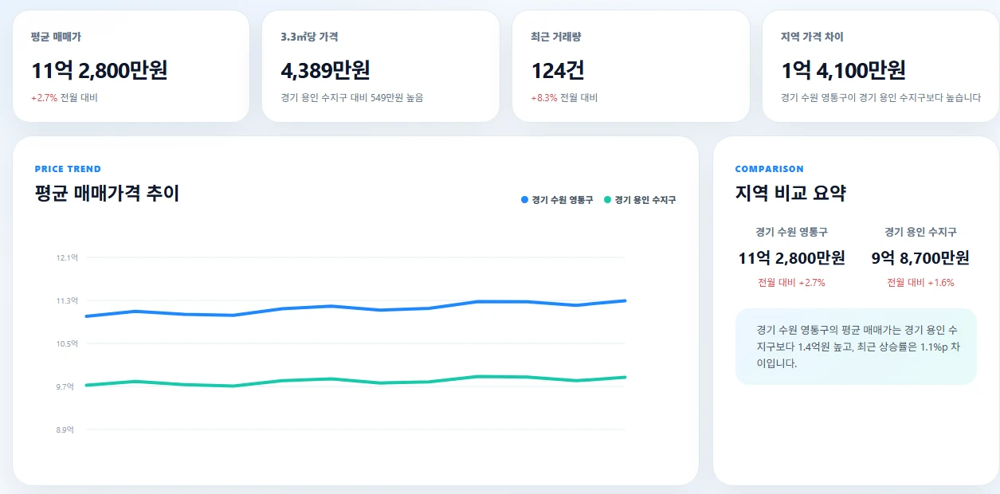
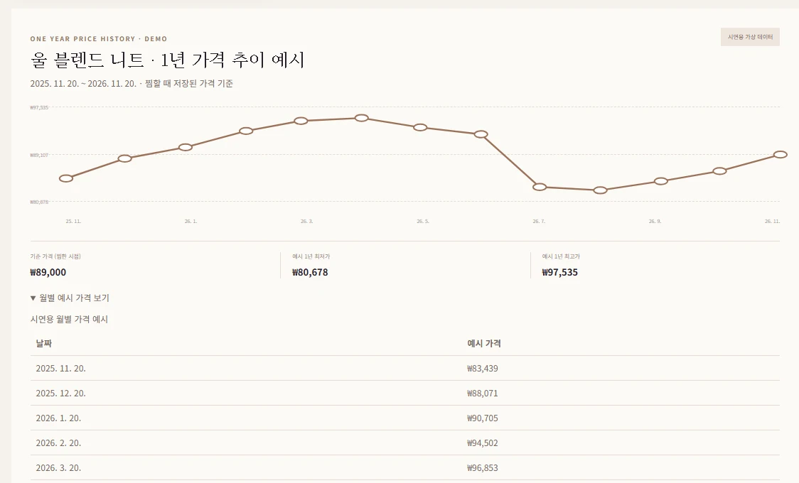

집찾고
↗지역별 부동산 정보를 비교하는 플랫폼입니다.
맡은 작업 매매 실거래 비교 화면과 데이터 표시
프로젝트 소개
관심 지역의 아파트 매매 동향을 한 화면에서 비교할 수 있도록, 기준 지역과 비교 지역을 선택하는 화면과 실거래 데이터를 표시하는 기능을 작업했습니다. 평균 매매가, 3.3㎡당 가격, 거래량과 최근 실거래를 함께 확인할 수 있습니다.
실제 서비스 방문IT SALES · AI & DATA
거래처의 요구를 듣고 현장에서 대응해 왔습니다. AI·데이터·웹 개발 교육을 바탕으로 고객의 요구를 개발팀에 정확히 전달하고자 합니다.

AI & MACHINE LEARNING ／ DATA ANALYSIS ／ BUSINESS THINKING
SCROLL TO DISCOVER01 / SELECTED WORK
팀과 함께 고민하고 만들어온
두 가지 서비스 프로젝트입니다.

지역별 부동산 정보를 비교하는 플랫폼입니다.
맡은 작업 매매 실거래 비교 화면과 데이터 표시
관심 지역의 아파트 매매 동향을 한 화면에서 비교할 수 있도록, 기준 지역과 비교 지역을 선택하는 화면과 실거래 데이터를 표시하는 기능을 작업했습니다. 평균 매매가, 3.3㎡당 가격, 거래량과 최근 실거래를 함께 확인할 수 있습니다.
실제 서비스 방문
패션 탐색과 구매 결정을 돕는 서비스입니다.
맡은 작업 가격 흐름 화면과 시연 데이터 시각화
시연 환경에서 가격 이력 조회 방식을 이해할 수 있도록, 찜 상품을 기준으로 예시 가격 그래프와 월별 기록 화면을 구현했습니다.
가격 흐름 화면 보기02 / ABOUT ME
17년의 영업 경험 위에,
AI와 데이터라는 새로운 관점을 더합니다.
2026년 4월부터 10월까지 개발·AI·빅데이터 교육을 수료하고, 현재 생성형 AI·AWS 클라우드 기반 풀스택·자동화 심화 교육을 이어가고 있습니다. 배운 지식을 팀 프로젝트에 연결하며, 아이디어가 서비스가 되는 과정을 경험했습니다.
목표와 맥락을 먼저 이해하고, 데이터를 근거로 방향을 찾습니다. 꾸준한 학습과 책임감 있는 소통으로 팀에 기여하겠습니다.
03 / EXPERIENCE
오랜 시간 한 조직과 함께하며 쌓아온
영업 경험과 책임감입니다.
2007.09 ~ 2024.10 · 영업부 / 영업사원
거래처마다 다른 요구를 듣고 현장 상황에 맞춰 대응했습니다.
JTI Korea에서 여러 거래처를 담당했습니다. 고객의 의견을 듣고 거래처별 상황을 파악했으며, 고객과의 약속을 지키고 꾸준히 소통해 거래 관계를 유지했습니다.
고객의 의견과 거래처별 상황을 확인
거래처의 요구와 현장 상황에 맞춰 대응
약속을 지키고 지속적으로 소통
거래처의 요구를 파악해 온 경험과 개발 교육에서 쌓은 기술 이해를 바탕으로, 고객의 요구를 개발팀에 전달하는 IT 영업 담당자가 되고자 합니다.
RESUME & COVER LETTER
경력, 학력, 교육 이력과 자기소개서를 확인할 수 있습니다.
04 / WHAT I BRING
머신러닝의 기초와 AI 활용에 대한 이해를 바탕으로, 기술을 문제에 적용할 수 있는 방법을 고민합니다.
AI & MACHINE LEARNING데이터를 통해 문제를 바라보고 의미를 발견합니다. 막연한 판단보다 근거 있는 방향을 찾고자 합니다.
DATA-DRIVEN THINKING목표를 함께 이해하고 우선순위를 세웁니다. 책임감 있는 소통과 실행으로 팀의 결과물에 기여합니다.
BUSINESS & COLLABORATION